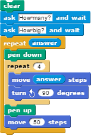

Lesson 2.3: Inputs and Conditionals¶
Student Objectives¶
Students will be able to…
Apply
AskandReceivein Snap!.Apply simple conditional,
ifandif-elseblocks, to alter control flow in a Snap! program.
Materials/Preparation¶
Video Resource: https://youtu.be/t3k3wOxO1xI
Video Quiz: See Additional Curriculum Materials accessed from the TEALS Dashboard.
Pacing Guide¶
Duration |
Description |
|---|---|
5 minutes |
Welcome, attendance, bell work, announcements |
20 minutes |
Lecture |
20 minutes |
What Shape is That? Activity |
10 minutes |
Debrief and wrap-up |
Note: This lesson may cover too much material for some classes to handle in one day. Feel free to spill over into a second day, splitting the material however works best for your class.
Instructor’s Notes¶
Lecture¶
Point out that, so far, our programs have had minimal interactivity
There was some user interaction in the shape drawing labs, but no back and forth– just pushing a key to trigger an action.
This is not normally how computer programs work.
Ask students for examples of interactive computer programs.
Ask students for suggestions for making previous labs or activities more interactive.
There are no right or wrong answers here The goal is to get students thinking about interactivity.
Introduce the
ask _ and waitblock.
Demonstrate that it functions similar to the
sayblock but waits for a response from the user.
The response is stored in the
answerblock and can be referenced later.Variables will not be introduced until unit 3, so this block will be somewhat magical for now. You should judge your students’ preparedness to handle the details and act accordingly.
Emphasize that only one input is stored at a time, and that asking a new question deletes the previous answer.
For example, the following script, intended to draw a bunch of squares where the user specifies both the size and the number of squares, will not work as intended:

Introduce conditional statements¶
Define conditional - a block used to make a choice between executing two different chunks of code.
You can also use this video on conditionals by Flocabulary.
Point out the differences between
ifandif/elseblock.
Namely, if-else provides a choice between two code paths, whereas if simply chooses between executing code or not
Emphasize that only one of the bodies, either the if or the else, will ever be executed.
Show students the relational operators (<, >, and =).
These should be fairly intuitive to most students.
Activity¶
Direct students to complete the What Shape is That? activity individually or in pairs.
Help students realize that, although they may seem quite different, parts 2.1 and 2.2 require very similar code.
Debrief¶
Discuss one or two students solutions.
Point out differences between the approaches of different students and lead discussion about advantages and disadvantages.
Place particular emphasis on the choice between if and if-else blocks.
Explain that, when conditions are mutually exclusive (as in part 2.1), a series of if vs. if-else blocks can be functionally equivalent.
When the conditions are not mutually exclusive (as in part 2.2), the choice matters more.
BJC Lecture Suggestions¶
Good for Classroom Instruction¶
BJC Lecture 13: Mislabeled as 14) Human-Computer Interaction Bjorn Hartman
Why Study User Interfaces Ex:Mouse Xy axis, Sketchpad, PC, Tablets 15:00-25:00
Example Project: Using Dexterity for Computer Interface Video 28:30-29:30
Multi Touch Apps and Toolkits 32:00-End
Background Information for Instructors¶
BJC Lecture 13: Mislabeled as 14) Human-Computer Interaction Bjorn Hartman
Bjorn Hartman Background 0:00-3:30
Human Computer Interface(HCI) 3:45-6:00
HCI: Design, Computer Science, Applied Psychology 6:00-8:00
Iterative Design Cycle 8:00-10:30
Understanding Users 10:35-11:35
Prototype Interface Examples 11:40-14:00
Evaluation (Formative, Summative) 14:50
Why Study User Interfaces Ex:Mouse Xy axis, Sketchpad, PC, Tablets 15:00-25:00
What had changed? Research: Mainframe to Ubiquitous Computing 25:00-29:30
Example Project: Using Dexterity for Computer Interface Video 28:30-29:30
Zipf/Power Law Distribution 30:00-32:00
HCI Research at Berkeley 32:10-46:25
Multi Touch Apps and Toolkits 32:00-End
Accommodation/Differentiation¶
Advanced students can be encouraged to add extra functionality, such as attempting to draw the shape the user is specifying or identifying types of triangles (equilateral, isosceles, scalene)
Students who are struggling can be allowed to skip some parts of the tables in 2.1 and 2.2, focusing on just a few cases
Forum discussion¶
Lesson 2.3 Inputs and Conditionals (TEALS Discourse account required).